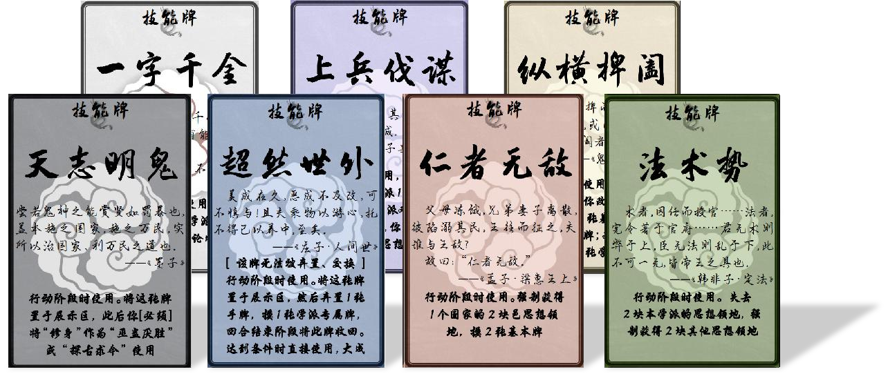
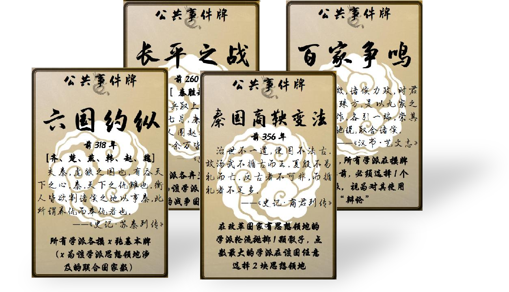
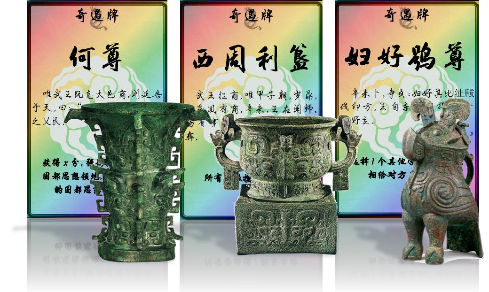

游戏规则
游戏准备
第一步
每位玩家选择各自的学派，并在自家积分铬上放置学派指示物
第二步
每家学派抛掷骰子，点数最大的为一号位，然后依次逆时针决定位次顺序。每位玩家按照位次顺序依次选择思想领地，每次选择 1 块，直到每人都拥有 3 块。
第三步
所有学派将本学派代表人物竖置放入展示区，纵横家选择初始势力。所有学派依次摸取 3 张基本牌和 2 张学派专属牌。
学派代表人物:
儒家：孟轲
道家：庄周
法家：韩非
墨家：墨翟
杂家：吕不韦
兵家：孙膑
纵横家（合纵）/（连横）：苏秦/张仪
游戏概念
思想领地
地图上八角星、盾牌形、方形和圆形都代表思想领地。
其中，八角星图案代表国都思想领地，占 3 分；
方形图案代表城思想领地，占 2 分；
圆形图案代表邑思想领地，占 1 分；
盾牌图案代表小邦国思想领地，占 3 分。
用线相连的思想领地即为相邻的思想领地。
玩家回合
一回合分为开始阶段——摸牌阶段——行动阶段——结束阶段。由一号位开始所有玩家依次执行一个玩家回合。
入仕回合
本轮次最后一个玩家回合结束后，所有玩家进入公共的入仕回合，玩家可依次选择是否使 1 位本学派人物入仕，并获得对应分数。人物入仕换取的分数与人物的综合能力值相同。
综合能力值
所有出场人物具有基础辩论值，游戏过程中，人物会获得各种增益（用夹子表示，1 个夹子代表 1 点增益）。
综合能力值=基础辩论值+各类增益数值
例：孟子的基础辩论值为 4、获得过 2 点增益，他的综合能力值即为 6。
出场人物
处于展示区的人物，最多同时存在 3 人。
横/竖置
表示出场人物的状态。横置状态时，人物不可辩论且技能失效。
特性
学派在游戏任何时刻都生效的固定技能。
任务树
各学派都有发展自身思想的任务，且任务必须依次完成。
学派每完成一个任务获得对应奖励，然后解锁下一个任
务，不可越级完成任务。
当完成第 5 个任务时，该学派大成。
国家战争
每个战争的国家有思想领地的学派弃 1 张基本牌。
国家联合
每个联合的国家有思想领地的学派摸 1 张基本牌。
国家改革
在该国家有思想领地的学派轮流抛掷 1 颗骰子，点数最大的学派在该国任意选择 2 块领地成为自己的思想领地。
宣讲
1. 选择 1 块没有主流思想的思想领地，获得它。
2. 选择 1 块其他学派的思想领地，进行宣讲对决。
宣讲对决：本学派与被宣讲的学派分别投掷 x 个骰子[x 为与被宣讲的思想领地相邻的思想领地（含该领地）数，且 x 至少为 1]，比较双方骰子点数的最大值，若发起者的最大值更大，视为宣讲成功，获得该思想领地。否则视为宣讲失败。
示例：
道家（蓝色）打出“宣讲”，并选择思想领地“大梁”。由于道家有 2 块思想领地和“大梁”有连接，所以拥有 2颗骰子进行投掷。而控制“大梁”的法家（绿色）有 4 块相邻的思想领地，再加上“大梁”本身被法家控制，所以法家共有 5 颗骰子。 双方投掷骰子后结果如图，由于法家的最大值为“5”，大于道家的最大值“4”。所以道家宣讲失败，“大梁”仍归属于法家。
修身
将本学派 1 位竖置出场人物送入稷下学宫，进行 3 个修身回合的修身学习，学派的回合开始阶段，本学派所有修身人物减少 1 个修身回合，修身回合减为 0 时，该人物获得 1 点增益，回到展示区，若出场人物已满，该人物回到手牌中。
辩论
需要两个不同学派的竖置出场人物进行辩论（否则辩论失效），双方投掷一定数量的骰子。
辩论进攻方骰子数=人物综合能力值+3
辩论防守方骰子数=人物综合能力值+2
点数 5 和点数 6 为立论成功点
立论成功点数量多的一方，必须获得 x 块失败方思想领变为自己的思想领地（x 为双方立论成功点数量之差）。若平局，视为无获胜、失败者。
辩论结束后，双方的辩论人物必须横置。
辩论结算顺序：发起辩论——投掷骰子——决出结果——失败者学派失去思想领地——获胜者学派获取思想领地——横置人物——辩论结束。
示例：
法家对道家打出“辩论”后，双方进行人物的选择。
法家的卡牌展示区有未被横置的人物“申不害”“李斯”，之后法家选择申不害进行辩论。而道家的卡牌展示区有未被横置的人物“田骈”“杨朱”，道家选择杨朱进行辩论。
进攻方骰子数为综合能力值+3，所以法家投掷 4+3=7颗骰子。防守方骰子数为综合能力值+2，所以道家投掷3+2=5 颗骰子。
投掷结果如图，法家存在 1 个“5”，2 个“6”，有 3 个立论成功点。而道家存在 1 个“5”，有 1 个立论成功点。
所以，法家取得辩论胜利。先将 3-1=2 块道家思想领地转换为法家思想领地，再横置辩论过的人物“申不害”“杨朱”。
小邦国
地图上存在的 6 个盾牌形思想领地，视为“小邦国”思想领地。它们不属于任何国家。
所有学派无法通过“游历”以外的方式获得“小邦国”思想领地。
游历
每个行动阶段限 1 次，学派可以弃置 6-x 种不同的基本牌（x 为你的分数排名），然后选择一个小邦国进行“游历”。
投掷 1 颗骰子，依据点数执行对应效果：
1/2：游历被驱逐，仅摸 1 张学派专属牌。
3/4/5：游历小有成就，获得该邦国。
6：游历大获成功，永久获得该邦国。
每个邦国为 3 分，计入“宣讲对决”的领地计算，
你每拥有1块小邦国思想领地，行动阶段开始时，你可以额外摸1张基本牌。
游戏流程
第一步
在每个轮次开始时，翻开 1 张公共事件牌，并触发效果。
第二步
学派依次执行自己的回合。
开始阶段
竖置本学派所有出场人物。
修身人物减少 1 个修身回合。
摸牌阶段
学派可以选择摸 2 张基本牌或摸 1 张学派专属牌。
行动阶段
学派可以使用基本牌，上限为 2 张（巫蛊厌胜和辩论 2 效果不计入上限）。
学派可以使用满足使用条件的学派专属牌（包括将学派专属牌中的人物牌置入展示区），无次数限制。
学派可以宣布自己行动阶段结束，然后进入结束阶段。
结束阶段
本学派回合结束，开始下一位次的玩家回合。
第三步
所有学派的执行完自己的回合，进入入仕回合。所有学派可以依次选择本学派 1 名出场人物入仕，并获得对应分数。人物入仕换取的分数与人物的综合能力值相同。
第四步
轮次结束
获胜条件
任意学派的影响分数率先达到 50 分时该学派胜利！
或者
任意学派“大成”后,场上分数最多的学派获得胜利！
卡牌说明
学派势力牌
儒家/道家/法家/墨家/纵横家/杂家/兵家
共 7 张学派势力牌
基本牌
满足使用条件时使用，触发其效果。
15 张“探古求今”
10 张“巫蛊厌胜”
20 张“修身”
15 张“辩论”
30 张“宣讲”
学派专属牌（技能牌）
满足使用条件时使用，触发其效果。
学派专属牌（人物牌）
行动阶段时使用，将其竖置置入展示区。
各学派人物牌数量：儒家 6 张；道家 5 张；纵横家 5 张；
墨家 5 张；法家 5 张；兵家 5 张。
公共事件牌
每个轮次开始时，翻开一张“公共事件牌”，触发其效果。
奇遇牌
摸到后必须展示并立即触发其效果。
